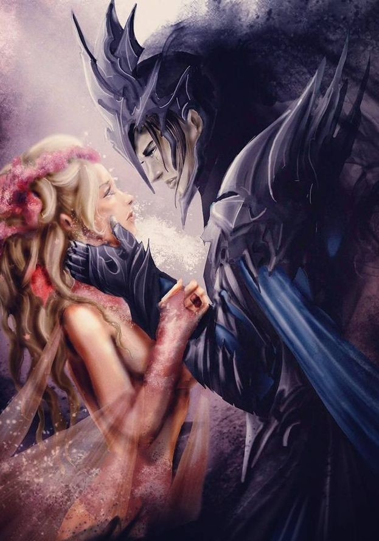

|

|
❤Легенда о Лунной деве гласит: она — порождение тьмы и хаоса, её чары настолько опасны, что могут уничтожить мир. А самое главное — она пожирает души драконов.
Сказки, да и только — так и думала, читая предания о темных временах… пока не попала в мир, где драконы действительно существуют и объявляют охоту на единственную появившуюся за последнюю тысячу лет Лунную деву. То есть на меня.
Чтобы выжить, мне нужно быть осторожной. Скрываться под чужой личиной. А чтобы вернуться домой — придётся принять правила игры, влюбить в себя дракона и заставить его открыть портал.
Но как при этом не влюбиться самой?
|